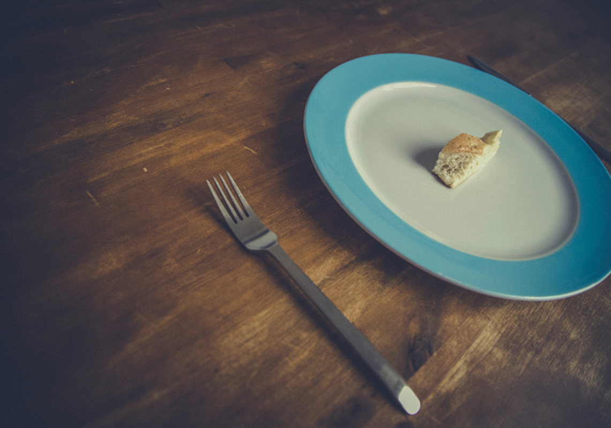
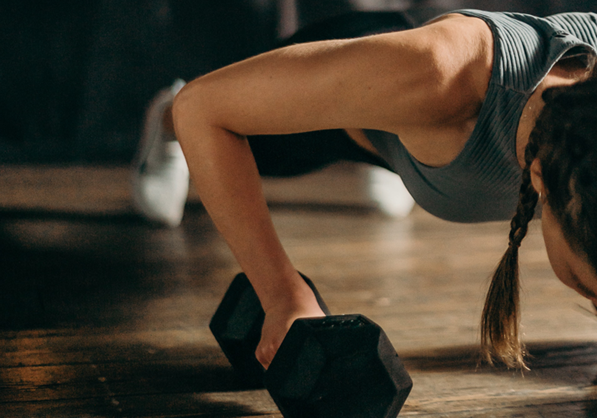
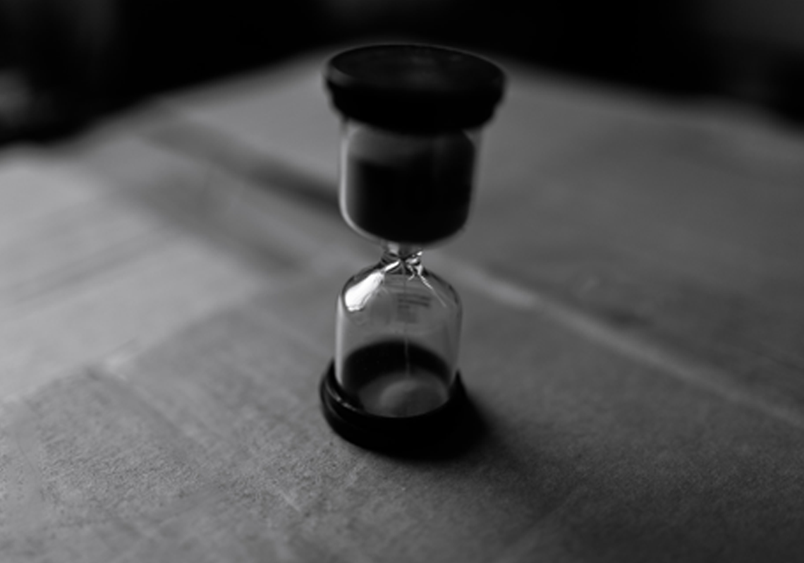

今天和大家討論一下「減脂」這個問題，很多人嘗試了很多辦法減脂，卻最終宣告減脂失敗。其實，正確的「減脂」方法尤為重要。
身邊社交論壇上有很多關於「減肥」、「減脂」的帖子，很多的真實性有待考量，儘管有很多作者是真實的減肥成功案例，但是她們的減肥方法一定就適用你嗎？
我集齊了論壇和短視頻平台上的各種減肥方法，結果令人震驚。她們的方法看起來超級無敵簡單，但事實上，只要你信了，就中招了。今天來帶大家解密「減脂」的八大誤區吧。如果你不注意到以下這八點，你的減脂效果可是會大打折扣的！
一、不要過度「節食」

很多處在減脂期的人害怕吃的多，於是開始過度節食！其實長期節食對身體的損害非常大，不僅僅是降低身體基礎代謝這麼簡單，更會加速身體的衰老，身體機能的衰退。與此同時，節食後暴食會造成更加嚴重的後果。規律飲食，在長期將總體熱量攝入平緩減少更加科學。當然如果你避免油膩每餐8分飽，且搭配上Xenical「羅氏鮮」，效果會更好更明顯。
二、不要忽視營養素的豐富和均衡！
人體是一個有機平衡的整體，任何營養素在人體內都有其不可替代的作用。我們的運動和訓練對身體其實是一種消耗（和工作勞動是一樣的），只有充足的飲食補充，將各種營養素補齊，才能使身體健康的回复，保持最佳狀態的平衡。
三、不要熬夜！不要熬夜！不要熬夜！
因為，熬夜讓人衰老！熬夜讓人生病！熬夜讓人發胖！熬夜讓人憔悴！有時候，熬夜甚至會斷送你一整天的努力！當然你的身體每天晚上都會分泌瘦素參與糖、脂肪及能量代謝的調節，促使機體減少攝食，增加能量釋放，抑制脂肪細胞的合成，進而使體重減輕。所以，從今天開始，熬夜的你們需要改變，你們可以早起，可以放棄午休，但是晚上11點之前必須上床睡覺！
四、不要過量訓練！

其實訓練的時間過長對健身並不好！這會讓兩次訓練之間沒有充足的休息，這種情況經常發生在一些熱衷於健身的朋友當中。因為身體再訓練後需要充分的恢復休息，來進行合成代謝，是身體更加的強健。過度的訓練不僅會破壞這個過程，還會使身體的過度勞累累積。所以呢，補充好你的蛋白質，好好休息你的身體！
五、不要只做有氧運動！
雖然，有氧運動可以幫助我們有效燃脂，但如果長期只做有氧運動，會使我們的肌肉不再飽滿，皮膚和身形不再緊緻，脂肪分佈不再均勻和合理，身體成分不再正常（水分和蛋白質丟失過多）。而且還會讓女性月經不再正常！所以在你有氧以前，開始你的力量訓練吧。 （無氧）
六、幹掉你的畏難情緒！
一個人養成一個習慣只需要21天！而在畏難情緒面前選擇放棄，只需要一個念頭！很多看似困難的動作，有時正是你得到提高，進步最快的途徑！你堅持不下去的時候，往往也是最關鍵的時候。每一個完美身材的背後都有著只屬於他的艱辛！只有不斷地挑戰、堅持和勝利，才能得到你想要的！
七、好身材不是一天練成的！

減肥應當是一個以月為單位，需要我們長期的堅持不懈。急功近利的方法（蘋果瘦身等）不僅容易反彈，而且還會損害我們的健康。健康飲食和健身需要我們的長期堅持才能收穫效果，在中途放棄不僅會傷了你的自信心，還會為以後的生活帶來不便。還有，作為一個進階了的健身小白給你提個忠告：珍惜你有限的運動時間，不要在健身房聊天刷手機！